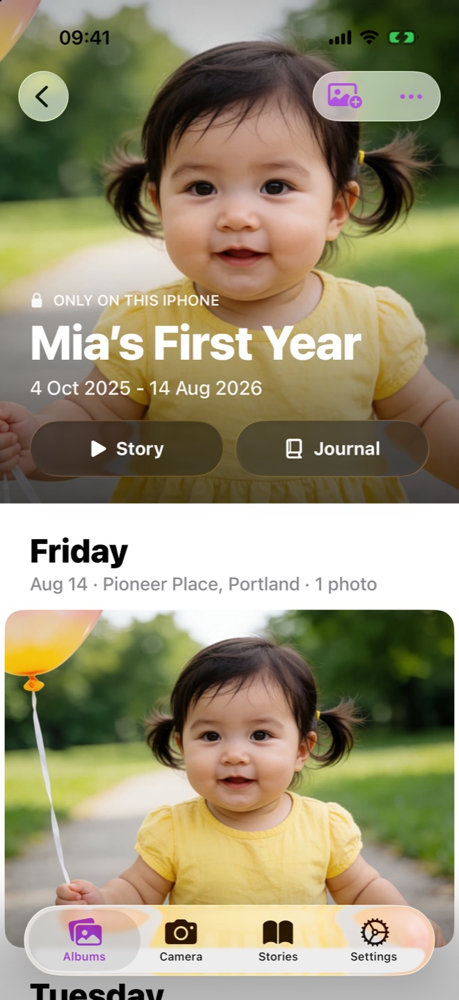

How to use SyncAlbum.
Every video on this page was recorded in the app. Start with sharing: it's the one thing that takes two phones.
Create an album.
- On the Albums screen, tap ••• and choose New Album.
- Type a name. Add a place, dates, a category and a kind if you like.
- Keep Only on this iPhone off to share it later, or turn it on for a private album.
- Tap Create Album, then Import Photos: choose Photo Library or Browse Files…
- Check the photos on the confirmation screen and tap Add. They're sorted by the day they were taken.
Other ways in: shoot with the Camera tab straight into an album, or share photos and videos from Photos or any app and choose SyncAlbum.
React, caption, comment.
React
Open a photo and tap the smiley next to it. Pick any emoji.
Caption
Tap Add a caption under the photo. Everyone in the album sees it.
Comment
Tap Add a comment… at the bottom and send. You'll get a notification when someone replies.
Make a video story.
- Open the Stories tab, swipe to the album and tap Play. Or tap Story on the album itself.
- Choose Short or Long, and tap Photos to pick the highlights yourself.
- Tap Music to change the song: SyncAlbum's tracks, or Choose Your Own Music… from Files. Drag the window on the waveform to choose the part that plays.
- Tap the share button to export the video to Photos or send it.
Turn the phone sideways to watch it full screen. The music panel stays open when you rotate.
Write the journal.
- Open an album and tap Journal. The days, places, a map of the trip and chapters are already there, built from the photos.
- Tap Write a foreword to tell the story in your words.
- Tap Start reading and add your take to each chapter: a note, or a voice note that's transcribed on your iPhone.
- Use the chapter menu to rename, split or join chapters.
- Tap the share button at the top to make a photobook PDF.
Organize your albums.
- On the Albums screen, tap ••• and choose New Category. Give it a name, an icon and a colour.
- Long-press an album and choose Move to Category.
- Switch between the stacked deck and the grid with the buttons next to each category.
- Tap the magnifying glass to search every album. Typos are fine.
- To change an album's cover, open the album and choose Change Cover in the ••• menu.
Keep albums private.
Hide an album
Long-press it and choose Hide Album. It leaves your home screen on all your devices.
Lock with Face ID
Open Reorder & Hidden from the category's view menu, or Settings, and turn on Lock Hidden Albums with Face ID. Unhide from the same list.

Only on this iPhone
Turn on Only on this iPhone when you create an album. It never syncs and doesn't count toward your 3 free albums.
When something's off.
I was approved, but the album didn't appear.
Open Settings › My Requests and tap Tap to Add Album on the approved request. If the request has no button, open the album link again.
The link doesn't open the album.
Make sure SyncAlbum is installed and you're signed in to iCloud in the iPhone's Settings. Then tap the link again, or scan the QR code with the Camera.
I'm not getting notifications.
Check Settings › Notification Settings in SyncAlbum, and that notifications for SyncAlbum are allowed in the iPhone's Settings. People in your album should be on the latest version too.
Photos are taking long to appear.
Photos travel through iCloud in full quality, so a large album can take a while on a slow connection. Keep the app open on Wi-Fi to speed it up, and check that your iCloud storage isn't full.
I've hit 3 shared albums.
Tap the crown on the Albums screen to get Unlimited Albums, a one-time purchase. Already bought it, or bought credits before? Tap Restore Purchases on the same screen. Private albums and albums you've joined never count.
How do I leave an album or remove someone?
Owners manage people from the album's ••• menu, under Friends. To leave an album you joined, long-press it and choose Leave Album; your other albums aren't affected.
Still stuck? Contact us, we read every message.